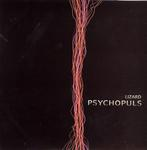

Home Artist links Label link

Lizard - Psychopuls
| Artist: | Lizard |
| Title: | Psychopuls |
| Label: | Metal Mind MMP CD 0235 |
| Length(s): | 44 minutes |
| Year(s) of release: | 2004 |
| Month of review: | [10/2004] |
Line up
Damian Bydlinski - vocals, guitar
Andrzej Jancza - keyboards
Janusz Tanistra - bass
Wojtek Steblik - drums
Tracks
| 1) | Psychopuls #001 Part 1 | 1.23
|
| 2) | Psychopuls #001 Part 2 | 7.22
|
| 3) | Psychopuls #002 Part 1 | 0.34
|
| 4) | Psychopuls #002 Part 2 | 8.17
|
| 5) | Psychopuls #003 Part 1 | 1.35
|
| 6) | Psychopuls #003 Part 2 | 4.36
|
| 7) | Psychopuls #003 Part 3 | 4.23
|
| 8) | Psychopuls #002, 0A7 | 3.50
|
| 9) | Psychopuls #004 | 11.36
|
Summary
After the band's 1996 debut W Galerii Czasu and a 1999 live album this is only the band's second studio album.
The music
Psychopuls undoubtedly is a concept album. It definitely features a recurrent musical theme. As far as the lyrics go: they're in Polish, leaving me short. The music is strong, pushing. Bydlinski's vocals have a distant almost cold feel to them, which fits in well with the music. There is a business like feel about this music, not in the sense that it's not musical, quite to the contrary, that's hard to describe. Certainly the cold Polish words help. But it's not just the vocals. The guitar riffs have a bitten feel, a lot of synth reels are fast and almost over before they start. The technical bassing and bashing drums helps too, somewhat akin to Thrak-era King Crimson, but not as dominant. Halfway through track four, though, we suddenly run into a Red-era patch King Crimson, with the same kind of building guitar riff on warm sounding moog synths. This sort of build up returns on track seven. Not a rip off, but the influence is so clear.
Track six is a suddenly friendly sounding track, sort of guitar vocal. Almost smokey bar music for its gentleness, and it would have been had the guitar been replaced with a sax.
Conclusion
Lizard's previous efforts showed some decent ideas, but also some rough patches. With this release they have merged their ideas into a consistent whole. They have taken their King Crimson influence and merged it with their own insights into art rock. The result is an album the way they seem to be made in Eastern Europe only. They can be enjoyed, though, in other places as well. It was definitely a good idea of this band to come up with this, another studio effort. Good stuff.
© Roberto Lambooy